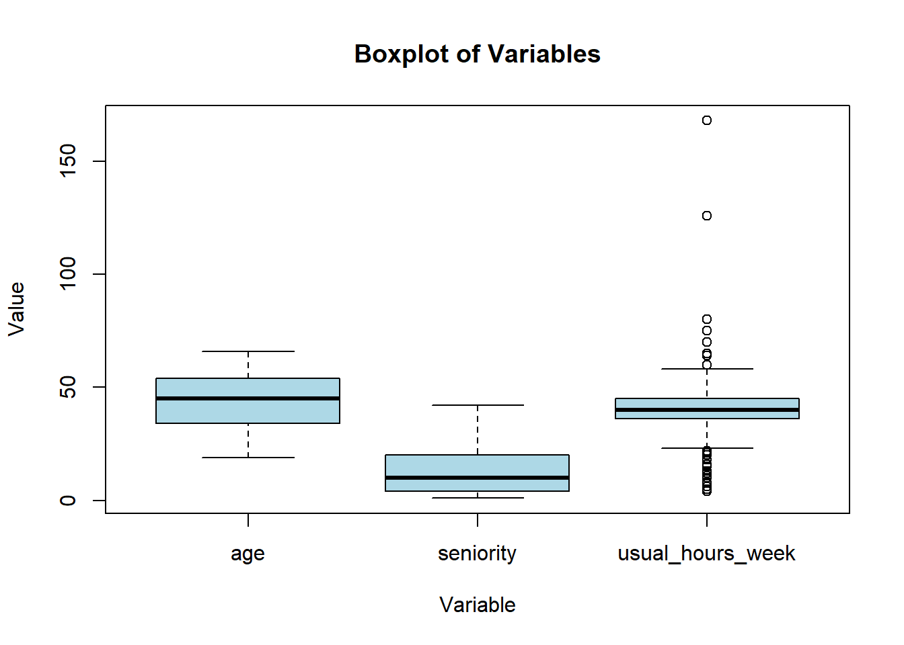

The following objects are masked from 'package:stats':
filter, lag
The following objects are masked from 'package:base':
intersect, setdiff, setequal, union
library(purrr)library(readr)library(ggplot2)library(tidyr)# Additional libraries used for this analysislibrary(sjlabelled) # Labeling data
Attaching package: 'sjlabelled'
The following object is masked from 'package:ggplot2':
as_label
The following object is masked from 'package:dplyr':
as_label
library(psych) # Psychometric analysis and data manipulation
Attaching package: 'psych'
The following objects are masked from 'package:ggplot2':
%+%, alpha
# Load custom functions from external scriptsource("functions.R")
Data Cleaning
Parameters
Here we can set parameters to select other countries or target variables. The parameters set are those necessary for the scope of this work.
# Specify the country of interest: Italy (16)countries <-c(16)# Define the variables of interestvariablestopredict <-c("eng_energy", "eng_enthusiastic", "eng_timeflies")# Determine whether to include M1 questions in the analysis (more NAs, but more variables)consideringM1<-TRUE
Reading the data
# Import the original dataset using a custom functionsourcedf <-ImportOriginalDataset()
Converting atomic to factors. Please wait...
# Check the levels and labels of the 'private_sector' variable to see if the data is soundlevels(sourcedf$private_sector)
[1] "-999" "-888" "1" "2" "3" "4" "5"
names(attributes(sourcedf$private_sector)$labels)
[1] "Refusal (spontaneous)"
[2] "DK (spontaneous)"
[3] "The private sector"
[4] "The public sector"
[5] "A joint private-public organisation or company"
[6] "The not-for-profit sector or an NGO"
[7] "Other, please specify:"
Selecting the variables
The selection of variables is determined based on a manually curated .csv file named ‘used_variables.csv’. This file contains the variables deemed relevant for this research.
# If consideringM1 is FALSE, exclude M1 from selected variablesusedvar <-ImportUsedvar(M1 = consideringM1)
ℹ Using "','" as decimal and "'.'" as grouping mark. Use `read_delim()` for more control.
# Select the necessary variables from the dataset, filter for employees, and remove the 'employee_selfdeclared' variabledf <- sourcedf %>%select(all_of(usedvar$variable)) %>%filter(employee_selfdeclared ==1) %>%select(-employee_selfdeclared)# Update the list of used variables, removing 'employee_selfdeclared' after filteringusedvar <- usedvar %>%filter(variable !="employee_selfdeclared")# Check summaries for 'seniority' and 'predict_earnings' variablessummary(df$seniority)
Min. 1st Qu. Median Mean 3rd Qu. Max.
-999.0 2.0 5.0 -117.5 14.0 88.0
summary(df$predict_earnings)
-999 -888 1 2 3
79 371 39764 15234 6678
# Check summaries for work engagementsummary(df$eng_energy)
# Define the values that need to be replaced with NAvalues_to_na <-c(-777, -888,-998, -999)# Replace these values with NA in the dataset, and drop unused levels in factor variablesdf <- df %>%mutate(across(everything(), ~replace(., . %in% values_to_na, NA)))#%>% mutate(across(where(is.factor), ~droplevels(.)))# Check summaries again for 'seniority' and 'predict_earnings' variablessummary(df$seniority)
Min. 1st Qu. Median Mean 3rd Qu. Max. NA's
1.00 3.00 7.00 10.58 15.00 88.00 7907
summary(df$predict_earnings)
-999 -888 1 2 3 NA's
0 0 39764 15234 6678 450
# Check summaries for work engagementsummary(df$eng_timeflies)
Filter for Specific Country and Non-NA Variables of what we want to predict
Here we select the rows that concern Italy and the rows that include the worker engagement information - notice that the worker engagement variables are only available in a M2 subset of the survey and that’s why there are a lot of NAs
# Filter for the specified country (Italy) and ensure all outcome variables have non-NA valuesdf <- df %>%filter(Country %in% countries) %>%filter(across(all_of(variablestopredict), any_vars(!is.na(.))))
Warning: Using `across()` in `filter()` was deprecated in dplyr 1.0.8.
ℹ Please use `if_any()` or `if_all()` instead.
# Check summaries again for 'seniority' and 'predict_earnings' variables to compare with previous scriptssummary(df$seniority)
Min. 1st Qu. Median Mean 3rd Qu. Max. NA's
1.0 4.0 10.0 12.6 20.0 42.0 143
summary(df$predict_earnings)
-999 -888 1 2 3 NA's
0 0 738 292 162 2
Outliers
There’s 2 outliers that were removed based on a z-score method, the choice of z reflects our objective to remove these two outliers, will still making the code resilient enough if we want to explore other countries.
# Visualize potential outliers with a boxplotboxplot(df$age, df$seniority, df$usual_hours_week, names =c("age", "seniority", "usual_hours_week"), main ="Boxplot of selected numerical Variables",xlab =" ",ylab ="Value")

# Define a function to remove extreme outliers (those that fall outside a specified number of standard deviations from the mean)remove_extreme_outliers <-function(df, threshold =4) {# Store original number of rows original_nrow <-nrow(df)# Iterate over all numeric columns df <- df %>%mutate(across(where(is.numeric), list(outlier =~ifelse(is.na(.), NA, abs((. -mean(., na.rm =TRUE)) /sd(., na.rm =TRUE)) <= threshold)),.names ="{.col}_outlier")) %>%filter(if_all(ends_with("_outlier"), ~is.na(.) | .)) %>%select(-ends_with("_outlier"))# Calculate and print number of rows removed removed_rows <- original_nrow -nrow(df)print(paste("Removed", removed_rows, "rows"))return(df)}df <-remove_extreme_outliers(df)
[1] "Removed 2 rows"
# Get the count of NA values for each column in your dataframena_count <- df %>%summarise_all(function(x) sum(is.na(x)))na_count <- na_count %>%pivot_longer(cols =everything(), names_to ="variable", values_to ="value")# Create histogramggplot(na_count, aes(x = value, y =reorder(variable, value))) +geom_bar(stat ="identity", width =0.5, fill ="black", alpha=0.7) +labs(title ="Distribution of Missing Values",x ="Count of NA", y ="Variable") +scale_x_continuous(breaks =c(300, 600, 900, 1192), limits =c(0, nrow(df))) +theme_minimal() +theme(axis.text.y =element_text(angle =0, hjust =1), plot.title =element_text(hjust =0.5,vjust =1))
# This code is functionally useless for the reader, but it was made to setup a .csv# where I could manually label the variables that needed to be reversed.# I used Cronbach Alpha scores to help me through the process.var_info <-tibble(variables =character(),labels =character(), Values =character())# Loop through each variablefor (var innames(df)) { levels <-as.character(levels(df[[var]])) names <-names(attributes(df[[var]])$labels) combined <-paste(levels, names, sep =": ") output <-paste0("{", paste(combined, collapse =", "), "}") var_info <- var_info %>%add_row(variables = var, labels =attr(df[[var]], "label"),Values = output)}#write_csv(var_info, "../data/processed/var_info.csv")